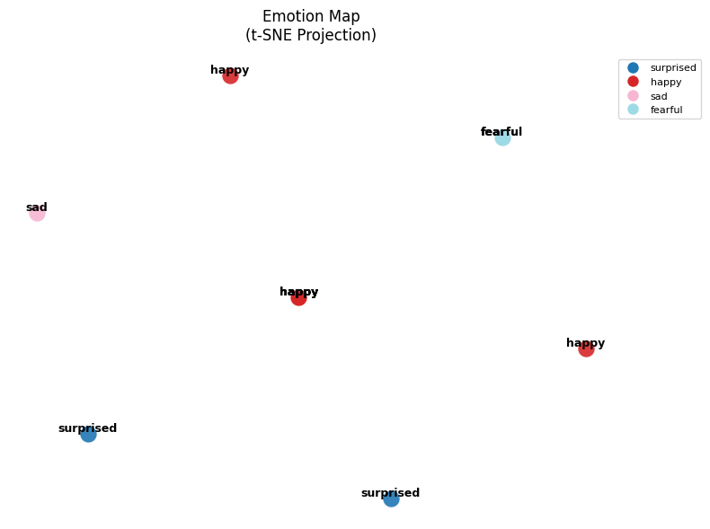
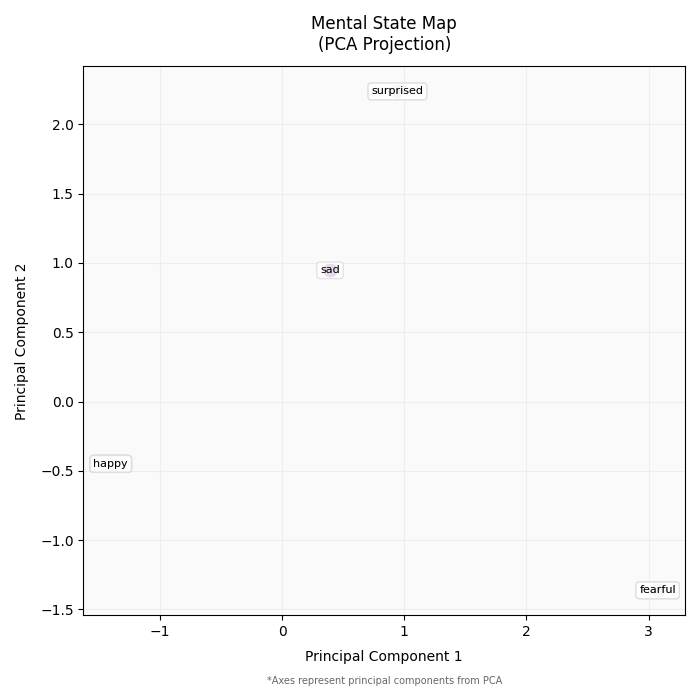
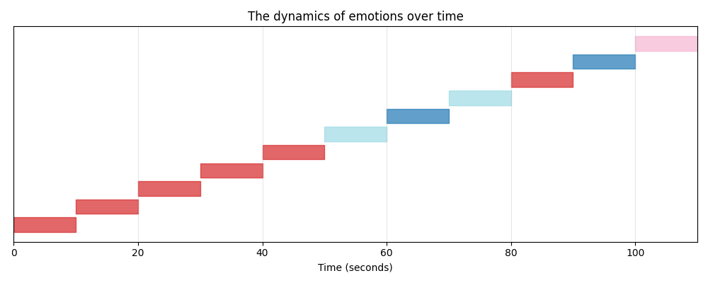

✨ Key Features
Multi-format Support
Process MP3, OGG, and WAV audio files with professional-grade analysis
Advanced Visualization
Interactive emotional maps using t-SNE, PCA, and UMAP projections
Real-time Analysis
10-second segment processing with dynamic emotion tracking
üîç How It Works

1. Audio Segmentation
Divide input audio into 10-second segments for granular analysis
2. AI Processing
Whisper-large-v3 model for emotion recognition and BERT for text analysis
3. Visualization
Generate interactive psycho-emotional maps and temporal charts
üìä Visualization Gallery
Explore interactive visual representations of emotional patterns derived from voice analysis
P.S. Tap on photo to see description





⚙️ Technical Stack
Core Models
- Whisper-large-v3
- BERT-base
- UMAP
Libraries
- Transformers
- Librosa
- Matplotlib
Infrastructure
- Python 3.8
- Tkinter GUI
- Hugging Face Hub